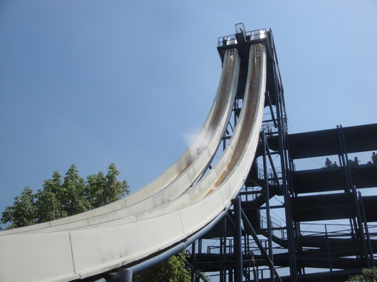

| |
Stuka's Boom Review

We're on the Stuka's Boom. This is one of the earlier drop slides. I know it wasn't the first one made, but it's definetly...I'm not sure how old it is. Or who even made it. Hell, looking at some original pictures, it looked like it was originally a drop slide converted into a Trap Door Slide. Well, we get in the capsule and wait to drop. Now this one isn't as smooth a transition. The operator releases the floor and you drop. You feel it fall out from underneath you before you drop. So there's a moment of "OH SH*T!!" before you drop. Granted, it does scratch your back, but I kind of like it. It's like the Intamin 1st Generation Freefall of Trap Door Slides. So yeah, I'd recommend riding this. Just don't forget about Twin Peaks next door.
9/10
Location: Movieland Studios
Opened: ???
Built by: ???
Last Ridden: June 21, 2012
Stuka's Boom Photos
|